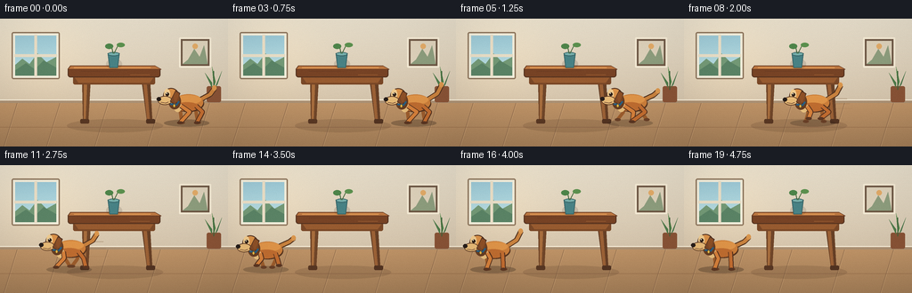
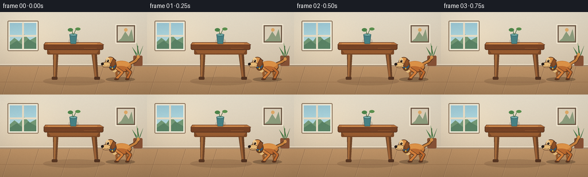

CODING AGENTS AS PIXEL WORLD MODELS
traex/GPT-5.6-Sol · dynamic_spatial_relationship_0002
点击播放 · 原生 RGB 像素
逐轮保存的候选
回放视频、检查图与代码变化。
每份候选均可单独播放。实际图片检查记录在下方工具轨迹中。
候选 01播放与检查图
点击播放 · 原生 RGB 像素


展开代码变化
--- 上一保存版本 +++ 本次保存版本 @@ -0,0 +1,218 @@ +from pathlib import Path +import math +import numpy as np +from PIL import Image, ImageDraw, ImageFilter +import artifact_io + +W, H, N = 256, 144, 20 +S = 4 +rng = np.random.default_rng(7) + +def sc(v): + if isinstance(v, (tuple, list)): + return tuple(int(round(x*S)) for x in v) + return int(round(v*S)) + +def poly(draw, pts, fill, outline=None, width=1): + draw.polygon([(sc(x),sc(y)) for x,y in pts], fill=fill) + if outline: + draw.line([(sc(x),sc(y)) for x,y in pts+[pts[0]]], fill=outline, width=sc(width), joint='curve') + +def ellipse(draw, box, fill, outline=None, width=1): + draw.ellipse(sc(box), fill=fill, outline=outline, width=sc(width) if outline else 1) + +def rr(draw, box, radius, fill, outline=None, width=1): + draw.rounded_rectangle(sc(box), radius=sc(radius), fill=fill, outline=outline, width=sc(width) if outline else 1) + +def line(draw, points, fill, width=1): + draw.line([(sc(x),sc(y)) for x,y in points], fill=fill, width=sc(width), joint='curve') + +def make_background(): + # Soft illustrated late-afternoon room, rendered oversized for clean antialiasing. + hh, ww = H*S, W*S + yy, xx = np.mgrid[0:hh, 0:ww] + y = yy/(hh-1) + wall = np.empty((hh,ww,3),dtype=np.float32) + top=np.array([233,224,205.]); bot=np.array([210,193,168.]) + t=np.clip(y[...,None]/.72,0,1) + wall[:] = top*(1-t)+bot*t + # Warm light from left window. + glow=np.exp(-(((xx/S-45)/58)**2+((yy/S-46)/54)**2))*14 + wall += glow[...,None]*np.array([1,.75,.35]) + wall=np.clip(wall,0,255).astype(np.uint8) + im=Image.fromarray(wall,'RGB') + d=ImageDraw.Draw(im) + # Wall panel / baseboard + d.rectangle(sc((0,91,256,95)), fill=(171,145,116)) + d.rectangle(sc((0,91,256,92)), fill=(245,234,212)) + # floor gradient + for yy0 in range(sc(95), sc(144)): + f=(yy0/S-95)/49 + col=(int(190-28*f),int(147-22*f),int(103-16*f)) + d.line([(0,yy0),(ww,yy0)],fill=col) + # floor plank seams and soft highlights + for px in [19,67,121,180,235]: + d.line([sc((px,95)), sc((px-15,144))], fill=(134,100,72), width=sc(.45)) + d.line([sc((px+1,95)), sc((px-14,144))], fill=(214,174,127), width=sc(.35)) + d.line([sc((0,122)),sc((256,122))], fill=(148,108,75), width=sc(.55)) + # Window left: detailed but subdued, not competing with table/dog + rr(d,(13,15,67,68),2,(245,240,221),(143,119,94),1.5) + d.rectangle(sc((17,19,63,64)),fill=(163,204,211)) + # sky gradient panes + for py in range(sc(19),sc(64)): + f=(py/S-19)/45 + d.line([sc((17,py/S)),sc((63,py/S))],fill=(int(157+35*f),int(202+25*f),int(215+14*f))) + # distant greenery + poly(d,[(17,52),(25,45),(33,51),(42,39),(52,49),(63,43),(63,64),(17,64)],(116,154,119)) + poly(d,[(17,58),(29,50),(39,57),(49,47),(63,55),(63,64),(17,64)],(91,132,102)) + d.rectangle(sc((38.5,18,41.5,65)),fill=(235,224,200)) + d.rectangle(sc((16,40,64,43)),fill=(235,224,200)) + # framed minimal wall art on right + rr(d,(201,21,237,55),1,(111,89,70),(246,236,214),2) + d.rectangle(sc((205,25,233,51)),fill=(222,210,187)) + poly(d,[(211,46),(218,34),(224,43),(229,30),(233,51),(205,51)],(142,158,126)) + ellipse(d,(216,28,222,34),(226,171,104)) + # small plant in far-right corner + rr(d,(232,76,248,94),2,(137,83,54)) + poly(d,[(238,78),(230,61),(238,72)],(78,123,74)) + poly(d,[(241,78),(249,59),(244,74)],(66,112,68)) + poly(d,[(240,77),(238,54),(242,71)],(87,137,77)) + line(d,[(240,80),(240,59)],(61,98,58),1) + return im + +BG = make_background() + +def draw_table(im): + d=ImageDraw.Draw(im,'RGBA') + # large grounding shadow + ellipse(d,(75,113,183,128),(67,43,28,38)) + # tapered rear legs + poly(d,[(92,63),(102,63),(99,116),(93,116)],(112,70,41,255)) + poly(d,[(158,63),(168,63),(171,116),(165,116)],(103,64,38,255)) + # leg lit edges + poly(d,[(94,65),(98,65),(96,113),(94,113)],(167,109,61,255)) + poly(d,[(160,65),(164,65),(168,113),(165,113)],(155,97,54,255)) + # feet + rr(d,(90,113,100,118),1.5,(88,55,35,255)) + rr(d,(164,113,174,118),1.5,(82,51,33,255)) + # apron under tabletop + rr(d,(82,62,174,74),2,(122,72,39,255)) + poly(d,[(83,65),(173,65),(168,72),(88,72)],(151,91,48,255)) + # tabletop side and upper plane, obvious central table silhouette + rr(d,(76,55,180,66),3,(119,67,37,255),(82,49,31,255),1) + poly(d,[(79,53),(174,53),(181,57),(76,57)],(188,119,65,255),(103,58,34,255),.8) + line(d,[(83,55),(169,55)],(230,161,91,230),1) + # wood grain + line(d,[(91,59),(126,59),(143,58)],(83,48,30,110),.55) + line(d,[(146,63),(168,63)],(213,138,74,120),.5) + # vase and little leaves to enhance depth while retaining simple table identity + ellipse(d,(119,45,137,57),(49,36,28,35)) + poly(d,[(121,39),(134,39),(132,55),(123,55)],(72,130,133,255),(48,91,94,255),.8) + ellipse(d,(121,37.5,134,42),(117,174,171,255),(48,91,94,255),.7) + line(d,[(127,39),(125,30)],(67,103,61,255),1) + line(d,[(128,39),(133,29)],(67,103,61,255),1) + ellipse(d,(118,28,127,34),(78,133,74,255)) + ellipse(d,(131,27,140,32),(92,145,79,255)) + +def dog_position(i): + # Establish right-of-table for one full second, cross, then settle clearly left. + xs=[211,211,210,210,206,197,184,167,146,123,100,79,62,50,44,43,43,43,43,43] + return xs[i] + +def draw_dog(im, cx, frame, speed): + # A compact golden beagle-like dog, always facing left. + moving = speed > 2.0 + phase = (frame-4)*1.62 + bob = (1.25*math.sin(phase*2) if moving else .45*math.sin(frame*.9)) + cy=96+bob + d=ImageDraw.Draw(im,'RGBA') + # cast shadow changes subtly with airborne gait + ellipse(d,(cx-27,113.5,cx+24,121.5),(49,36,26,65 if moving else 80)) + # restrained speed accents only while crossing, behind silhouette + if speed>10: + for k,alpha in [(0,75),(1,48),(2,25)]: + y0=88+k*7+math.sin(frame+k)*2 + line(d,[(cx+21,y0),(cx+30+speed*.33+k*3,y0)],(120,86,52,alpha),1.0-k*.15) + # far legs (desaturated, rendered before body) + hip_back=cx+9; hip_front=cx-8 + if moving: + stride=7.7 + a=math.sin(phase) + b=-a + # far pair opposes near pair + feet_far=[(hip_front+stride*b,116-2.4*abs(a)),(hip_back+stride*a,116-2.4*abs(a))] + else: + feet_far=[(hip_front+1,117),(hip_back+2,117)] + for hip,foot in zip([hip_front,hip_back],feet_far): + knee=((hip+foot[0])*.5 + (2 if foot[0]<hip else -1),106) + line(d,[(hip,99),knee,foot],(155,92,44,255),4) + ellipse(d,(foot[0]-3,foot[1]-1.5,foot[0]+3.5,foot[1]+1.6),(105,64,39,255)) + # wagging tail, with dark outline under golden stroke + wag = math.sin(frame*1.45)*4 + tail_pts=[(cx+14,91),(cx+25,85+wag*.25),(cx+30,78+wag)] + line(d,tail_pts,(83,52,32,255),6) + line(d,tail_pts,(201,130,62,255),4) + ellipse(d,(cx+27,75+wag,cx+32,81+wag),(218,150,77,255)) + # body outline and chest + ellipse(d,(cx-17,86+bob,cx+18,105+bob),(87,52,31,255)) + ellipse(d,(cx-16,85+bob,cx+17,103.5+bob),(203,126,58,255)) + # warm top plane + ellipse(d,(cx-13,86+bob,cx+15,96+bob),(223,148,72,255)) + ellipse(d,(cx-14,94+bob,cx+12,104+bob),(190,108,48,255)) + # cream chest patch + ellipse(d,(cx-16,94+bob,cx-7,105+bob),(235,194,127,235)) + # near legs with articulated running pose + if moving: + a=math.sin(phase) + foot1=(hip_front+8.8*a,116-3.7*abs(math.cos(phase))) + foot2=(hip_back-8.8*a,116-3.7*abs(math.cos(phase))) + else: + foot1=(hip_front-1,117) + foot2=(hip_back+1,117) + for j,(hip,foot) in enumerate(zip([hip_front,hip_back],[foot1,foot2])): + # backward-bending hock gives a readable canine run cycle + knee=((hip+foot[0])*.52 + (2.5 if foot[0]<hip else -2),105+bob*.2) + line(d,[(hip,98+bob),knee,foot],(84,49,30,255),5.6) + line(d,[(hip,98+bob),knee,foot],(213 if j==0 else 193,128 if j==0 else 108,59 if j==0 else 48,255),3.7) + ellipse(d,(foot[0]-3.3,foot[1]-1.6,foot[0]+3.6,foot[1]+1.7),(91,54,34,255)) + # neck and head, head at left clearly indicating direction + ellipse(d,(cx-22,84+bob,cx-8,102+bob),(103,61,34,255)) + ellipse(d,(cx-28,78+bob,cx-10,96+bob),(218,145,72,255),(81,49,31,255),.9) + # cream blaze and muzzle + ellipse(d,(cx-27,79+bob,cx-20,91+bob),(240,203,143,255)) + ellipse(d,(cx-34,87+bob,cx-18,97+bob),(231,186,119,255),(88,53,34,255),.7) + # floppy ear + poly(d,[(cx-14,81+bob),(cx-9,84+bob),(cx-14,97+bob),(cx-20,93+bob)],(126,72,38,255),(74,45,30,255),.7) + ellipse(d,(cx-16,83+bob,cx-10,94+bob),(151,86,40,150)) + # eye with pinpoint catchlight + ellipse(d,(cx-25.2,83+bob,cx-21.2,87+bob),(46,32,24,255)) + ellipse(d,(cx-24.5,83.4+bob,cx-23.3,84.6+bob),(255,249,221,255)) + # nose and mouth + ellipse(d,(cx-35.2,88.2+bob,cx-30.3,92.7+bob),(38,29,25,255)) + line(d,[(cx-30.5,94+bob),(cx-25,95+bob),(cx-22,93.8+bob)],(80,43,34,255),.75) + # collar bright blue; key clean edge atop all fur + line(d,[(cx-20,96+bob),(cx-13,97+bob),(cx-10,93+bob)],(39,94,130,255),2.2) + ellipse(d,(cx-17,96+bob,cx-14,100+bob),(230,184,71,255),(94,68,32,255),.4) + +def render_frame(i): + im=BG.copy() + draw_table(im) + cx=dog_position(i) + prev=dog_position(max(0,i-1)); speed=abs(cx-prev) + draw_dog(im,cx,i,speed) + # subtle warm cinematic vignette + arr=np.asarray(im.resize((W,H),Image.Resampling.LANCZOS)).astype(np.float32) + yy,xx=np.mgrid[0:H,0:W] + vig=1-0.075*np.clip(((xx-W/2)/(W*.72))**2+((yy-H/2)/(H*.75))**2,0,1) + arr*=vig[...,None] + # faint stable film texture (not frame-varying flicker) + noise=np.random.default_rng(100+i).normal(0,0.7,(H,W,1)) + arr=np.clip(arr+noise,0,255).astype(np.uint8) + return arr + +def main(): + frames=np.stack([render_frame(i) for i in range(N)],axis=0) + artifact_io.save(frames, Path(__file__).resolve().parent) + +if __name__=='__main__': + main()
可观测工具轨迹
实际执行的命令与返回图片。
命令 1exit 0
/bin/bash -lc "cat prompt.txt && printf '\\n---GENERATION_RULES---\\n' && cat GENERATION_RULES.md"
命令 2exit 0
/bin/bash -lc "cat task_spec.json && printf '\\n---FILES---\\n' && find . -maxdepth 2 -type f -printf '%p\\n' | sort"
命令 3exit 0
/bin/bash -lc 'cat artifact_io.py'
命令 4exit 0
/bin/bash -lc "cat > generate.py <<'PY'
from pathlib import Path
import math
import numpy as np
from PIL import Image, ImageDraw, ImageFilter
import artifact_io
W, H, N = 256, 144, 20
S = 4
rng = np.random.default_rng(7)
def sc(v):
if isinstance(v, (tuple, list)):
return tuple(int(round(x*S)) for x in v)
return int(round(v*S))
def poly(draw, pts, fill, outline=None, width=1):
draw.polygon([(sc(x),sc(y)) for x,y in pts], fill=fill)
if outline:
draw.line([(sc(x),sc(y)) for x,y in pts+[pts[0]]], fill=outline, width=sc(width), joint='curve')
def ellipse(draw, box, fill, outline=None, width=1):
draw.ellipse(sc(box), fill=fill, outline=outline, width=sc(width) if outline else 1)
def rr(draw, box, radius, fill, outline=None, width=1):
draw.rounded_rectangle(sc(box), radius=sc(radius), fill=fill, outline=outline, width=sc(width) if outline else 1)
def line(draw, points, fill, width=1):
draw.line([(sc(x),sc(y)) for x,y in points], fill=fill, width=sc(width), joint='curve')
def make_background():
# Soft illustrated late-afternoon room, rendered oversized for clean antialiasing.
hh, ww = H*S, W*S
yy, xx = np.mgrid[0:hh, 0:ww]
y = yy/(hh-1)
wall = np.empty((hh,ww,3),dtype=np.float32)
top=np.array([233,224,205.]); bot=np.array([210,193,168.])
t=np.clip(y[...,None]/.72,0,1)
wall[:] = top*(1-t)+bot*t
# Warm light from left window.
glow=np.exp(-(((xx/S-45)/58)**2+((yy/S-46)/54)**2))*14
wall += glow[...,None]*np.array([1,.75,.35])
wall=np.clip(wall,0,255).astype(np.uint8)
im=Image.fromarray(wall,'RGB')
d=ImageDraw.Draw(im)
# Wall panel / baseboard
d.rectangle(sc((0,91,256,95)), fill=(171,145,116))
d.rectangle(sc((0,91,256,92)), fill=(245,234,212))
# floor gradient
for yy0 in range(sc(95), sc(144)):
f=(yy0/S-95)/49
col=(int(190-28*f),int(147-22*f),int(103-16*f))
d.line([(0,yy0),(ww,yy0)],fill=col)
# floor plank seams and soft highlights
for px in [19,67,121,180,235]:
d.line([sc((px,95)), sc((px-15,144))], fill=(134,100,72), width=sc(.45))
d.line([sc((px+1,95)), sc((px-14,144))], fill=(214,174,127), width=sc(.35))
d.line([sc((0,122)),sc((256,122))], fill=(148,108,75), width=sc(.55))
# Window left: detailed but subdued, not competing with table/dog
rr(d,(13,15,67,68),2,(245,240,221),(143,119,94),1.5)
d.rectangle(sc((17,19,63,64)),fill=(163,204,211))
# sky gradient panes
for py in range(sc(19),sc(64)):
f=(py/S-19)/45
d.line([sc((17,py/S)),sc((63,py/S))],fill=(int(157+35*f),int(202+25*f),int(215+14*f)))
# distant greenery
poly(d,[(17,52),(25,45),(33,51),(42,39),(52,49),(63,43),(63,64),(17,64)],(116,154,119))
poly(d,[(17,58),(29,50),(39,57),(49,47),(63,55),(63,64),(17,64)],(91,132,102))
d.rectangle(sc((38.5,18,41.5,65)),fill=(235,224,200))
d.rectangle(sc((16,40,64,43)),fill=(235,224,200))
# framed minimal wall art on right
rr(d,(201,21,237,55),1,(111,89,70),(246,236,214),2)
d.rectangle(sc((205,25,233,51)),fill=(222,210,187))
poly(d,[(211,46),(218,34),(224,43),(229,30),(233,51),(205,51)],(142,158,126))
ellipse(d,(216,28,222,34),(226,171,104))
# small plant in far-right corner
rr(d,(232,76,248,94),2,(137,83,54))
poly(d,[(238,78),(230,61),(238,72)],(78,123,74))
poly(d,[(241,78),(249,59),(244,74)],(66,112,68))
poly(d,[(240,77),(238,54),(242,71)],(87,137,77))
line(d,[(240,80),(240,59)],(61,98,58),1)
return im
BG = make_background()
def draw_table(im):
d=ImageDraw.Draw(im,'RGBA')
# large grounding shadow
ellipse(d,(75,113,183,128),(67,43,28,38))
# tapered rear legs
poly(d,[(92,63),(102,63),(99,116),(93,116)],(112,70,41,255))
poly(d,[(158,63),(168,63),(171,116),(165,116)],(103,64,38,255))
# leg lit edges
poly(d,[(94,65),(98,65),(96,113),(94,113)],(167,109,61,255))
poly(d,[(160,65),(164,65),(168,113),(165,113)],(155,97,54,255))
# feet
rr(d,(90,113,100,118),1.5,(88,55,35,255))
rr(d,(164,113,174,118),1.5,(82,51,33,255))
# apron under tabletop
rr(d,(82,62,174,74),2,(122,72,39,255))
poly(d,[(83,65),(173,65),(168,72),(88,72)],(151,91,48,255))
# tabletop side and upper plane, obvious central table silhouette
rr(d,(76,55,180,66),3,(119,67,37,255),(82,49,31,255),1)
poly(d,[(79,53),(174,53),(181,57),(76,57)],(188,119,65,255),(103,58,34,255),.8)
line(d,[(83,55),(169,55)],(230,161,91,230),1)
# wood grain
line(d,[(91,59),(126,59),(143,58)],(83,48,30,110),.55)
line(d,[(146,63),(168,63)],(213,138,74,120),.5)
# vase and little leaves to enhance depth while retaining simple table identity
ellipse(d,(119,45,137,57),(49,36,28,35))
poly(d,[(121,39),(134,39),(132,55),(123,55)],(72,130,133,255),(48,91,94,255),.8)
ellipse(d,(121,37.5,134,42),(117,174,171,255),(48,91,94,255),.7)
line(d,[(127,39),(125,30)],(67,103,61,255),1)
line(d,[(128,39),(133,29)],(67,103,61,255),1)
ellipse(d,(118,28,127,34),(78,133,74,255))
ellipse(d,(131,27,140,32),(92,145,79,255))
def dog_position(i):
# Establish right-of-table for one full second, cross, then settle clearly left.
xs=[211,211,210,210,206,197,184,167,146,123,100,79,62,50,44,43,43,43,43,43]
return xs[i]
def draw_dog(im, cx, frame, speed):
# A compact golden beagle-like dog, always facing left.
moving = speed > 2.0
phase = (frame-4)*1.62
bob = (1.25*math.sin(phase*2) if moving else .45*math.sin(frame*.9))
cy=96+bob
d=ImageDraw.Draw(im,'RGBA')
# cast shadow changes subtly with airborne gait
ellipse(d,(cx-27,113.5,cx+24,121.5),(49,36,26,65 if moving else 80))
# restrained speed accents only while crossing, behind silhouette
if speed>10:
for k,alpha in [(0,75),(1,48),(2,25)]:
y0=88+k*7+math.sin(frame+k)*2
line(d,[(cx+21,y0),(cx+30+speed*.33+k*3,y0)],(120,86,52,alpha),1.0-k*.15)
# far legs (desaturated, rendered before body)
hip_back=cx+9; hip_front=cx-8
if moving:
stride=7.7
a=math.sin(phase)
b=-a
# far pair opposes near pair
feet_far=[(hip_front+stride*b,116-2.4*abs(a)),(hip_back+stride*a,116-2.4*abs(a))]
else:
feet_far=[(hip_front+1,117),(hip_back+2,117)]
for hip,foot in zip([hip_front,hip_back],feet_far):
knee=((hip+foot[0])*.5 + (2 if foot[0]<hip else -1),106)
line(d,[(hip,99),knee,foot],(155,92,44,255),4)
ellipse(d,(foot[0]-3,foot[1]-1.5,foot[0]+3.5,foot[1]+1.6),(105,64,39,255))
# wagging tail, with dark outline under golden stroke
wag = math.sin(frame*1.45)*4
tail_pts=[(cx+14,91),(cx+25,85+wag*.25),(cx+30,78+wag)]
line(d,tail_pts,(83,52,32,255),6)
line(d,tail_pts,(201,130,62,255),4)
ellipse(d,(cx+27,75+wag,cx+32,81+wag),(218,150,77,255))
# body outline and chest
ellipse(d,(cx-17,86+bob,cx+18,105+bob),(87,52,31,255))
ellipse(d,(cx-16,85+bob,cx+17,103.5+bob),(203,126,58,255))
# warm top plane
ellipse(d,(cx-13,86+bob,cx+15,96+bob),(223,148,72,255))
ellipse(d,(cx-14,94+bob,cx+12,104+bob),(190,108,48,255))
# cream chest patch
ellipse(d,(cx-16,94+bob,cx-7,105+bob),(235,194,127,235))
# near legs with articulated running pose
if moving:
a=math.sin(phase)
foot1=(hip_front+8.8*a,116-3.7*abs(math.cos(phase)))
foot2=(hip_back-8.8*a,116-3.7*abs(math.cos(phase)))
else:
foot1=(hip_front-1,117)
foot2=(hip_back+1,117)
for j,(hip,foot) in enumerate(zip([hip_front,hip_back],[foot1,foot2])):
# backward-bending hock gives a readable canine run cycle
knee=((hip+foot[0])*.52 + (2.5 if foot[0]<hip else -2),105+bob*.2)
line(d,[(hip,98+bob),knee,foot],(84,49,30,255),5.6)
line(d,[(hip,98+bob),knee,foot],(213 if j==0 else 193,128 if j==0 else 108,59 if j==0 else 48,255),3.7)
ellipse(d,(foot[0]-3.3,foot[1]-1.6,foot[0]+3.6,foot[1]+1.7),(91,54,34,255))
# neck and head, head at left clearly indicating direction
ellipse(d,(cx-22,84+bob,cx-8,102+bob),(103,61,34,255))
ellipse(d,(cx-28,78+bob,cx-10,96+bob),(218,145,72,255),(81,49,31,255),.9)
# cream blaze and muzzle
ellipse(d,(cx-27,79+bob,cx-20,91+bob),(240,203,143,255))
ellipse(d,(cx-34,87+bob,cx-18,97+bob),(231,186,119,255),(88,53,34,255),.7)
# floppy ear
poly(d,[(cx-14,81+bob),(cx-9,84+bob),(cx-14,97+bob),(cx-20,93+bob)],(126,72,38,255),(74,45,30,255),.7)
ellipse(d,(cx-16,83+bob,cx-10,94+bob),(151,86,40,150))
# eye with pinpoint catchlight
ellipse(d,(cx-25.2,83+bob,cx-21.2,87+bob),(46,32,24,255))
ellipse(d,(cx-24.5,83.4+bob,cx-23.3,84.6+bob),(255,249,221,255))
# nose and mouth
ellipse(d,(cx-35.2,88.2+bob,cx-30.3,92.7+bob),(38,29,25,255))
line(d,[(cx-30.5,94+bob),(cx-25,95+bob),(cx-22,93.8+bob)],(80,43,34,255),.75)
# collar bright blue; key clean edge atop all fur
line(d,[(cx-20,96+bob),(cx-13,97+bob),(cx-10,93+bob)],(39,94,130,255),2.2)
ellipse(d,(cx-17,96+bob,cx-14,100+bob),(230,184,71,255),(94,68,32,255),.4)
def render_frame(i):
im=BG.copy()
draw_table(im)
cx=dog_position(i)
prev=dog_position(max(0,i-1)); speed=abs(cx-prev)
draw_dog(im,cx,i,speed)
# subtle warm cinematic vignette
arr=np.asarray(im.resize((W,H),Image.Resampling.LANCZOS)).astype(np.float32)
yy,xx=np.mgrid[0:H,0:W]
vig=1-0.075*np.clip(((xx-W/2)/(W*.72))**2+((yy-H/2)/(H*.75))**2,0,1)
arr*=vig[...,None]
# faint stable film texture (not frame-varying flicker)
noise=np.random.default_rng(100+i).normal(0,0.7,(H,W,1))
arr=np.clip(arr+noise,0,255).astype(np.uint8)
return arr
def main():
frames=np.stack([render_frame(i) for i in range(N)],axis=0)
artifact_io.save(frames, Path(__file__).resolve().parent)
if __name__=='__main__':
main()
PY
python generate.py
python - <<'PY'
import numpy as np
from PIL import Image
z=np.load('pixels.npz')['pixels']
print(z.shape,z.dtype,hex(int(z.min())),hex(int(z.max())))
print(Image.open('inspection.png').size)
PY"保存候选 1 份；完成命令 4 次；可验证图片返回 0 张。原始 API 响应与完整日志保留在本地。